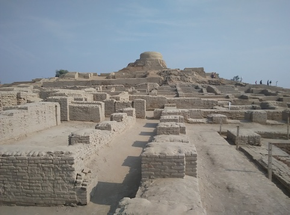

Exploring the Famous Tourist Attractions in Sindh
Different opinions have been given about the history and origin of the hill station. It is said that the medieval Hindu saint, Gorakhnath, had extensively wandered in hills and the region. According to Nandu, an authority on Sanskrit, Gorakh is a Sanskrit word which means "shepherding of sheep, cow and goat, etc."[6]

MOHENJO DARO
Mohenjo-daro was built in the 26th century BCE.[12] It was one of the largest cities of the ancient Indus Valley Civilization, also known as the Harappan Civilization,[13] which developed around 3,000 BCE from the prehistoric Indus culture. At its height, the Indus Civilization spanned much of what is now Pakistan and North India, extending westwards to the Iranian border, south to Gujarat in India and northwards to an outpost in Bactria, with major urban centers at Harappa, Mohenjo-daro, Lothal, Kalibangan, Dholavira and Rakhigarhi. Mohenjo-daro was the most advanced city of its time, with remarkably sophisticated civil engineering and urban planning.[14] When the Indus civilization went into sudden decline around 1900 BCE, Mohenjo-daro was abandoned.
KARACHI
Karachi is the most populous city in Pakistan and 12th most populous city in the world, with a population of over 20 million. It is situated at the southern ...